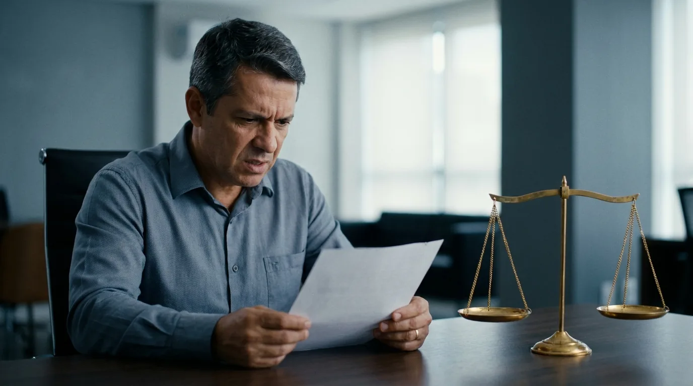

Demissão por Justa Causa: Quando Vale e Como Reverter

Receber uma demissão por justa causa é um dos golpes mais duros da vida profissional. Além de perder o emprego, o trabalhador sai sem boa parte das verbas rescisórias, que são os valores pagos no desligamento. Ainda carrega o peso de uma acusação formal de falta grave no fim do contrato.
Em Florianópolis e em toda a Grande Florianópolis, muitos trabalhadores aceitam essa punição calados. Grande parte deles não sabe que a dispensa pode estar errada. A lei impõe limites rígidos para esse tipo de rescisão. Quando a empresa desrespeita esses limites, a Justiça do Trabalho pode reverter a punição e devolver ao empregado todas as verbas da dispensa comum.
Por isso, entender as regras é o primeiro passo para reagir. Este guia explica o que caracteriza a justa causa, quais requisitos tornam a punição válida, o que se perde na rescisão e como funciona a reversão da justa causa perante a Justiça do Trabalho em Santa Catarina.
O que é justa causa e o que diz o art. 482 da CLT
A demissão por justa causa é a punição máxima que uma empresa pode aplicar a um empregado. Ela encerra o contrato de trabalho por culpa do trabalhador, em razão de uma falta considerada grave. Por ser a sanção mais severa do direito do trabalho, ela exige fundamento legal claro.
Esse fundamento está no art. 482 da Consolidação das Leis do Trabalho (CLT), o conjunto de normas que rege as relações de emprego no Brasil. O artigo traz uma lista fechada de condutas que autorizam a dispensa motivada. Em outras palavras, a empresa não pode inventar motivos fora dessa lista.
Muitos desses termos soam estranhos para quem não é da área jurídica. Por isso, a tabela abaixo traduz as principais hipóteses do art. 482 da CLT para a linguagem do dia a dia.
| Hipótese do art. 482 da CLT | O que significa na prática |
|---|---|
| Ato de improbidade | Desonestidade contra o empregador, como furto, fraude ou adulteração de documentos |
| Incontinência de conduta ou mau procedimento | Conduta de teor sexual ofensiva (assédio, atos obscenos) ou comportamento incorreto grave em geral |
| Desídia | Desleixo repetido: faltas constantes, atrasos frequentes, baixo cuidado com as tarefas |
| Embriaguez habitual ou em serviço | Trabalhar alcoolizado ou sob efeito de drogas durante o expediente |
| Violação de segredo da empresa | Vazar informações confidenciais do empregador para terceiros |
| Ato de indisciplina ou insubordinação | Descumprir normas gerais da empresa ou ordens diretas e legítimas do chefe |
| Abandono de emprego | Faltar por cerca de 30 dias seguidos sem justificativa, com intenção de não voltar |
| Ofensas físicas ou à honra | Agressão ou insultos contra colegas, chefes ou terceiros no serviço |
| Jogos de azar | Prática habitual de apostas durante o trabalho |
Repare que quase todas as hipóteses envolvem gravidade real. A desídia, por exemplo, não se configura com um único atraso. Ela exige um histórico de desleixo, normalmente já punido antes com advertências. Da mesma forma, o abandono de emprego pede ausência prolongada somada à intenção de não retornar.
Além disso, a falta precisa ter ligação com o trabalho. Um desentendimento na vida privada do empregado, sem reflexo no serviço, em regra não sustenta uma demissão por justa causa. Esse detalhe costuma passar despercebido por empresas que punem de forma apressada.
Quando a justa causa é válida: requisitos exigidos pela Justiça
A lei lista as faltas, mas foi a jurisprudência, ou seja, o conjunto de decisões reiteradas dos tribunais, que definiu como a punição deve ser aplicada. Assim, não basta a conduta constar do art. 482 da CLT. A empresa precisa cumprir três requisitos principais na hora de punir, além de duas exigências complementares que você verá adiante. Quando falha em qualquer etapa, abre caminho para a reversão da justa causa.
Imediatidade: a punição deve vir logo após a falta
O primeiro requisito é a imediatidade, também chamada de atualidade. A empresa deve punir logo depois de tomar conhecimento do fato. Se ela sabe da falta e demora semanas ou meses para agir, os tribunais entendem que houve perdão tácito. Ou seja, o silêncio prolongado funciona como aceitação da conduta, e a punição tardia perde a validade.
Proporcionalidade: a pena precisa caber na falta
O segundo requisito é a proporcionalidade. A justa causa deve ser reservada para faltas realmente graves ou para o fim de uma escalada de punições. Na prática, existe uma gradação de penas: primeiro a advertência, depois a suspensão e, só então, a dispensa motivada.
Consequentemente, punir um atraso isolado com demissão por justa causa tende a ser considerado exagero. Por outro lado, um furto comprovado pode justificar a dispensa imediata, sem punições anteriores. Tudo depende do peso da conduta e do histórico do empregado.
Proibição de punir duas vezes pelo mesmo fato
O terceiro requisito é a vedação da dupla punição. Se a empresa já advertiu ou suspendeu o empregado por determinado fato, ela não pode usar esse mesmo fato para demitir depois. Cada falta admite uma única sanção. Portanto, quem foi suspenso e, dias depois, recebeu justa causa pelo mesmo episódio tem forte argumento para contestar.
Atenção: a empresa também precisa provar o que alega. A acusação sem prova, baseada apenas em desconfiança, não sustenta a justa causa perante a Justiça do Trabalho. O ônus de comprovar a falta grave é sempre do empregador.
Existe ainda um requisito de coerência. A empresa não pode tratar empregados de forma desigual diante da mesma falta. Se dois trabalhadores cometeram o mesmo erro e apenas um recebeu justa causa, essa diferença de tratamento enfraquece a punição.
Se você foi dispensado em Florianópolis e percebe que algum desses requisitos falhou no seu caso, procure orientação antes de assinar qualquer documento definitivo. A equipe da Mussi Advocacia & Consultoria analisa os detalhes da dispensa e explica, com clareza, se há fundamentos para questionar a punição.
O que o trabalhador perde e o que mantém na justa causa
O prejuízo mais imediato da demissão por justa causa é financeiro. A rescisão motivada retira do trabalhador quase todas as verbas que ele receberia numa dispensa comum. A tabela abaixo compara as duas situações.
| Verba rescisória | Dispensa sem justa causa | Demissão por justa causa |
|---|---|---|
| Saldo de salário (dias trabalhados) | Recebe | Recebe |
| Férias vencidas + 1/3 constitucional | Recebe | Recebe |
| Férias proporcionais + 1/3 | Recebe | Não recebe |
| 13º salário proporcional | Recebe | Não recebe |
| Aviso prévio (trabalhado ou indenizado) | Recebe | Não recebe |
| Multa de 40% sobre o FGTS | Recebe | Não recebe |
| Saque do saldo do FGTS | Libera | Não libera |
| Seguro-desemprego | Tem direito, se preencher os requisitos | Não tem direito |
Vale traduzir alguns termos da tabela. Férias vencidas são as do período de doze meses já completado e ainda não tirado; as proporcionais correspondem aos meses trabalhados desde então. O terço é um acréscimo sobre o valor das férias, garantido pela Constituição. Já o aviso prévio pode ser cumprido trabalhando ou pago em dinheiro, quando a empresa dispensa o empregado de cumpri-lo.
O FGTS, sigla de Fundo de Garantia do Tempo de Serviço, é a poupança compulsória que a empresa deposita todo mês em nome do empregado. Na justa causa, esse dinheiro continua na conta vinculada, mas fica bloqueado para saque imediato. A multa de 40% sobre os depósitos, devida na dispensa comum, simplesmente desaparece.
Em resumo, o trabalhador punido mantém apenas o saldo de salário e as férias vencidas acrescidas de um terço, quando existirem. Todo o resto se perde. Numa rescisão de contrato longo, a diferença entre as duas modalidades pode representar muitos meses de salário.
Há ainda um prejuízo que não aparece na conta: a dificuldade de recolocação. Embora a justa causa não seja anotada na carteira de trabalho, o mercado de Florianópolis é conectado, sobretudo em setores como tecnologia, saúde, comércio e serviços. Uma saída conturbada pode pesar em futuras contratações. Esse é mais um motivo para não aceitar passivamente uma punição indevida. Antes de qualquer decisão, conheça os principais direitos do trabalhador brasileiro e compare com o que a empresa pagou na sua rescisão.
Reversão da justa causa: quando a Justiça derruba a punição
A justa causa aplicada de forma indevida pode ser desfeita. O caminho é a reclamação trabalhista, a ação judicial movida pelo empregado contra a empresa. Nela, o juiz examina se a falta existiu, se foi grave e se os requisitos de validade foram respeitados.
Quando a empresa não comprova a falta, ou quando falha na imediatidade, na proporcionalidade ou na punição única, o juiz declara a nulidade da dispensa motivada. A reversão da justa causa converte a rescisão em dispensa sem justa causa. A partir daí, a empresa é condenada a pagar tudo o que havia negado.
Isso inclui o aviso prévio, o 13º proporcional, as férias proporcionais com um terço e a multa de 40% do FGTS. O juiz também determina a liberação dos depósitos do fundo e a entrega das guias do seguro-desemprego. Quando a entrega já não é possível, a empresa costuma ser condenada a pagar em dinheiro o valor equivalente ao seguro-desemprego perdido.
Fique atento: cada processo depende das provas e das circunstâncias do caso concreto. Nenhum advogado sério promete resultado. O que a análise profissional faz é identificar falhas na punição e apresentá-las ao juiz da forma mais consistente possível.
Além das verbas, existe outra discussão frequente: o dano moral. Se a empresa acusou o trabalhador de forma ofensiva, divulgou a suposta falta a colegas ou imputou crime sem prova, a honra do empregado pode ter sido atingida. Nesses casos, a Justiça do Trabalho admite pedido de compensação financeira. O tema tem particularidades próprias, explicadas no nosso conteúdo sobre dano moral no trabalho.
Há ainda um fundamento cada vez mais frequente nas decisões: a embriaguez habitual ligada à dependência química. Os tribunais vêm tratando esse quadro como doença, e não como falta grave. Nesses casos, o caminho esperado da empresa é encaminhar o empregado a tratamento, não puni-lo, o que afasta a justa causa e reforça o pedido de reversão.
Um exemplo comum: o empregado é acusado de desídia e dispensado após um único atraso, sem nenhuma advertência anterior. A punição salta direto para a pena máxima, sem gradação. Diante disso, a chance de o juiz reconhecer o exagero e reverter a dispensa é concreta, sempre conforme as provas do processo.
Situações assim aparecem todos os dias nas varas do trabalho da capital catarinense. Se a sua demissão por justa causa se parece com esse cenário, não deixe o tempo correr. Converse com a Mussi Advocacia & Consultoria e receba uma avaliação honesta sobre a viabilidade da reversão no seu caso.
Como agir em Florianópolis: prazos, provas e advogado
Depois da dispensa, a forma de agir nos primeiros dias influencia todo o resultado. A seguir, veja o passo a passo recomendado para quem foi desligado na capital ou nas cidades vizinhas, como São José, Palhoça e Biguaçu.
Respeite o prazo de prescrição de dois anos
O trabalhador tem até dois anos, contados do fim do contrato, para entrar com a reclamação trabalhista na Justiça. Esse limite se chama prescrição e está previsto na Constituição Federal, no capítulo dos direitos sociais. Passado o prazo, o direito de discutir a dispensa na Justiça se perde, por mais forte que seja o caso.
Dentro da ação, a regra da prescrição impõe outro corte: só podem ser cobrados os valores dos cinco anos anteriores à data em que a ação é apresentada. Na prática, quem espera dois anos para entrar na Justiça só alcança os últimos três anos do contrato. Por isso, quanto antes o trabalhador agir, mais direitos consegue preservar. Agir rápido também facilita a produção de provas, enquanto a memória das testemunhas ainda está fresca.
Reúna documentos e testemunhas
Em seguida, organize tudo o que documenta a relação de emprego e a dispensa. São especialmente úteis: o termo de rescisão, a comunicação da justa causa, advertências e suspensões anteriores, holerites, controles de ponto, e-mails e mensagens trocadas com a chefia. Colegas que presenciaram os fatos podem servir como testemunhas.
Guarde também provas de que a versão da empresa é frágil. Atestados médicos que justificam faltas, elogios recebidos, metas batidas e avaliações positivas ajudam a demonstrar que o histórico do empregado não combina com a acusação.
Procure um advogado trabalhista em Florianópolis
Por fim, busque orientação especializada. Um advogado trabalhista em Florianópolis conhece a rotina das varas do trabalho da capital e o entendimento do Tribunal Regional do Trabalho da 12ª Região (TRT-12). É o tribunal que julga os recursos trabalhistas de Santa Catarina e tem sede na própria Florianópolis. Na prática, isso significa acompanhar as audiências pessoalmente, saber como as varas da capital e o TRT-12 costumam decidir e atender sem custo de deslocamento.
O profissional avalia a dispensa, calcula as verbas devidas e define a estratégia. Em muitos casos, a simples notificação bem fundamentada abre espaço para acordo direto com a empresa, sem precisar de processo. Em outros, a reclamação trabalhista é o caminho necessário. De qualquer forma, a decisão fica sempre nas mãos do cliente, com informação clara sobre riscos e possibilidades.
Importante: não assine documentos que reconheçam a falta grave sem antes entender as consequências. Pedidos de demissão redigidos pela empresa e termos de confissão podem dificultar a discussão judicial depois.
O mercado de trabalho da Grande Florianópolis é movimentado, e dispensas apressadas e mal documentadas acontecem com frequência por aqui. Quem conhece os próprios direitos não precisa aceitar um prejuízo injusto: pode corrigi-lo pela via legal.
Perguntas frequentes sobre demissão por justa causa
A justa causa fica anotada na carteira de trabalho?
Não. A anotação na carteira registra apenas a data de saída, sem mencionar o motivo. A empresa que escrever "justa causa" na carteira comete abuso e pode responder por dano moral. O motivo da rescisão aparece somente nos documentos internos e no termo de rescisão.
Quem é demitido por justa causa recebe alguma coisa?
Sim, mas muito pouco. O trabalhador recebe o saldo de salário pelos dias trabalhados no mês e as férias vencidas acrescidas de um terço, se existirem. Aviso prévio, 13º proporcional, férias proporcionais, multa de 40%, saque do FGTS e seguro-desemprego ficam de fora.
Quanto tempo tenho para entrar na Justiça contra a justa causa?
O prazo é de dois anos a partir do término do contrato de trabalho. Dentro do processo, só entram na conta os valores dos cinco anos anteriores à data em que a ação é apresentada: quem espera dois anos só alcança os últimos três anos do contrato. Perdido o prazo de dois anos, a discussão judicial se torna inviável, então a agilidade é essencial.
A empresa pode aplicar justa causa sem advertência anterior?
Pode, mas apenas em faltas muito graves, como furto, agressão ou violação de segredo. Nas faltas leves e médias, como atrasos e desleixo, a Justiça espera a gradação de penas: advertência, suspensão e só então a dispensa. O salto direto para a pena máxima costuma gerar reversão.
O que acontece quando a Justiça reverte a justa causa?
O juiz converte a rescisão em dispensa sem justa causa. A empresa paga aviso prévio, 13º proporcional, férias proporcionais com um terço e a multa de 40% do FGTS. O trabalhador ainda saca o fundo e recebe as guias do seguro-desemprego ou indenização equivalente, conforme o caso.
Preciso de advogado para reverter uma demissão por justa causa?
A lei permite ajuizar ação sem advogado na Justiça do Trabalho, mas a prática mostra que essa escolha é arriscada. A reversão depende de tese bem construída, provas organizadas e conhecimento do processo. O acompanhamento por advogado trabalhista aumenta a segurança em cada etapa.
Dê o próximo passo com segurança
A demissão por justa causa não precisa ser o ponto final. Quando a empresa erra na aplicação, a lei permite corrigir a injustiça e recuperar as verbas negadas. Se isso aconteceu com você em Florianópolis ou na região, a Mussi Advocacia & Consultoria está pronta para ouvir a sua história e indicar, com transparência, os próximos passos.